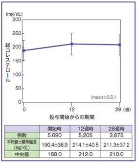
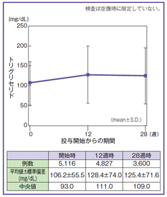

アクテムラ投与後に認められる脂質検査値の増加について
- ●発現機序
IL-6が脂質代謝系を抑制しているといわれており1）、ACT投与より、抑制されていた脂質代謝系の検査値が増加に転じる可能性が考えられる。 - ●発現頻度（全例調査：7,901例）
脂質関連検査値異常発現率は8.7%（686例）、 重篤な副作用発現率は0.1%（4例）。 これら686例に心血管系の事象の発現なし。 - ●対処法
臨床上必要と認められた場合には、高脂血症治療薬（スタチン系薬剤）の投与等を行う。
1）Ettinger WH,et al.：Arterioscler Thromb 14(1):8-13,1994

総コレステロールの平均値推移

TGの平均値推移